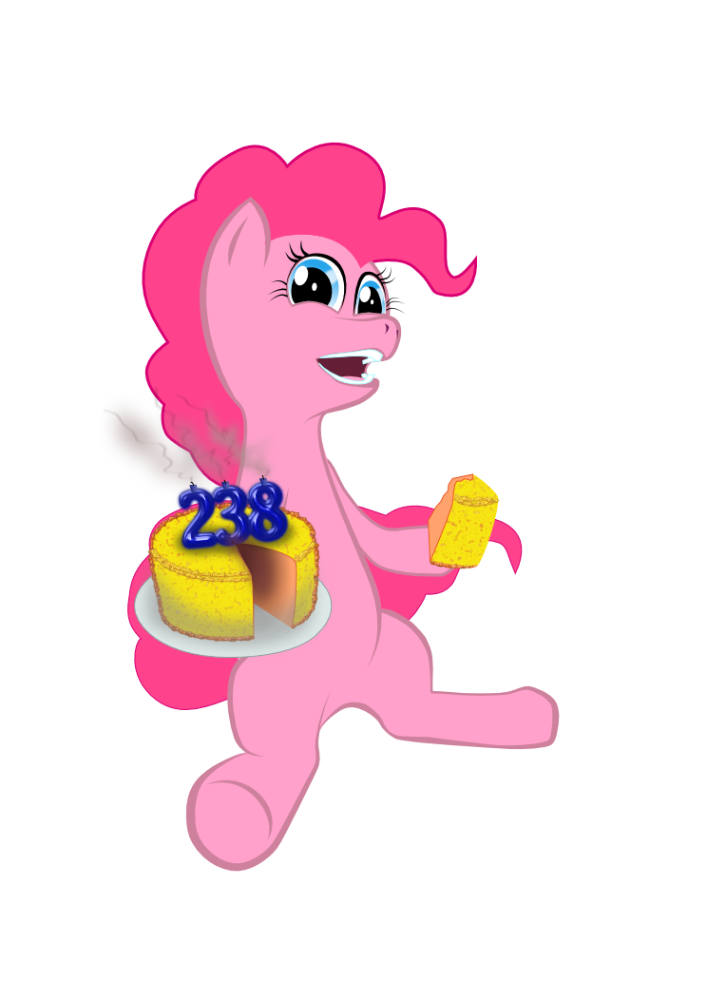

Шутка на первое апреля на самом деле не очень переводится на русский. На случай если вам интересно: желтый торт(yellow cake) это порошок, получаемый на промежуточном этапе переработки урановой руды. На русском он известен как жёлтый кокс.
This April 1'st joke does not translate to russian very well. In case you were wondering: yellowcake(yes, no space, жёлтый торт) is a powder from an intermediate step in the processing of uranium ores. In russian it is better known as yellow сoke(жёлтый кокс)

Да шучу я, шучу.
C'mon, I'm just messing with you.